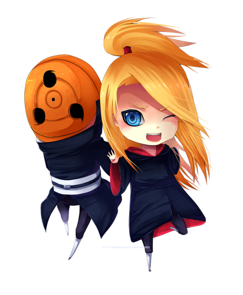

Deidara é um membro da Akatsuki conhecido por seu domínio das explosões. Ele é um artista que considera suas explosões como formas de arte, criando esculturas explosivas com seu chakra.
Deidara utiliza argila explosiva para criar suas obras de arte. Ele molda a argila em diversas formas, como pássaros e animais, e as torna explosivas com seu chakra. Suas explosões são poderosas e imprevisíveis.
Deidara é um estrategista habilidoso, utilizando suas habilidades de voo e suas esculturas explosivas para criar emboscadas e ataques surpresa. Ele é capaz de controlar suas explosões com precisão, visando seus inimigos com eficiência.
Deidara forma uma parceria com Sasori, outro membro da Akatsuki. Enquanto Deidara usa suas explosões, Sasori utiliza marionetes em combate. Juntos, eles são uma dupla perigosa e letal.
© 2023 Akatsuki. Todos os direitos reservados.